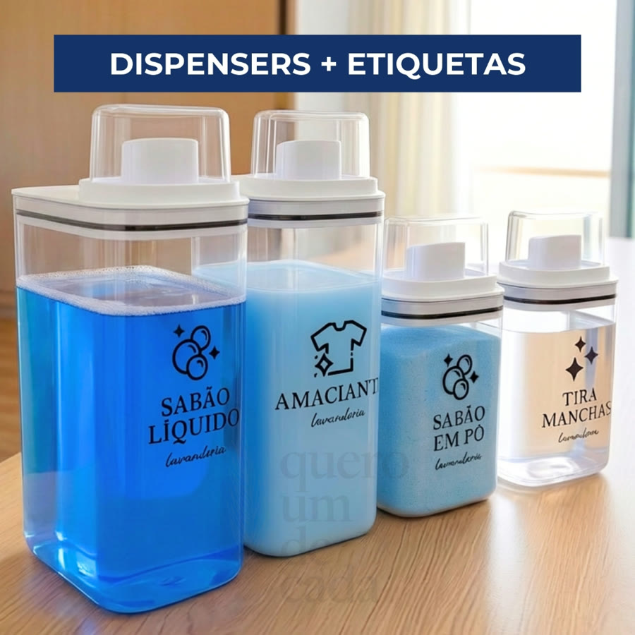
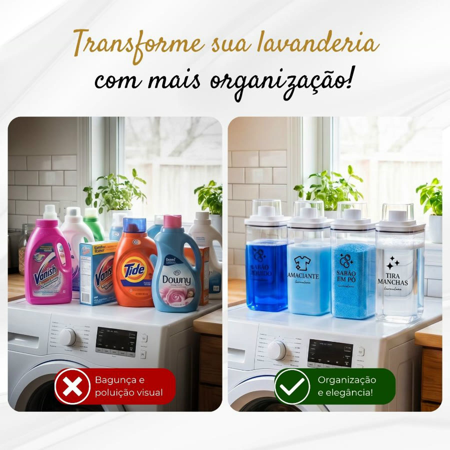
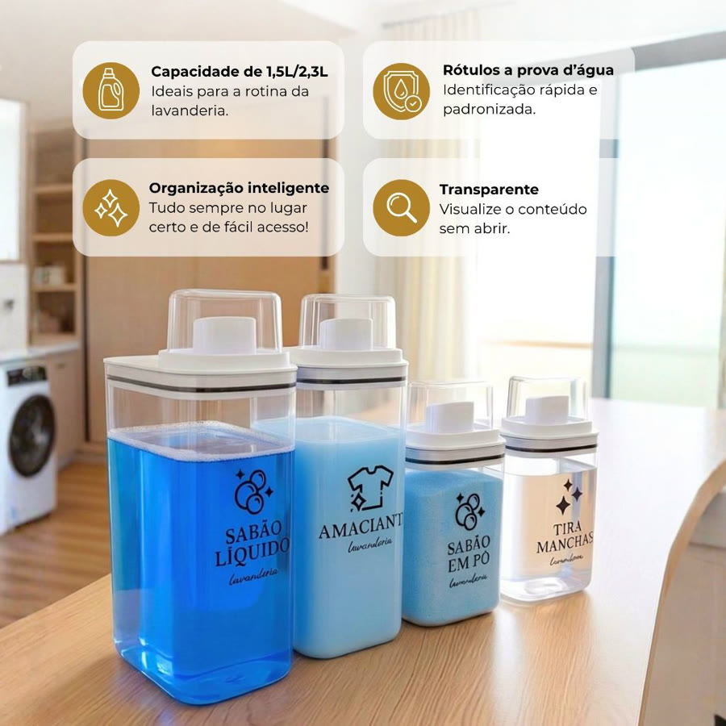
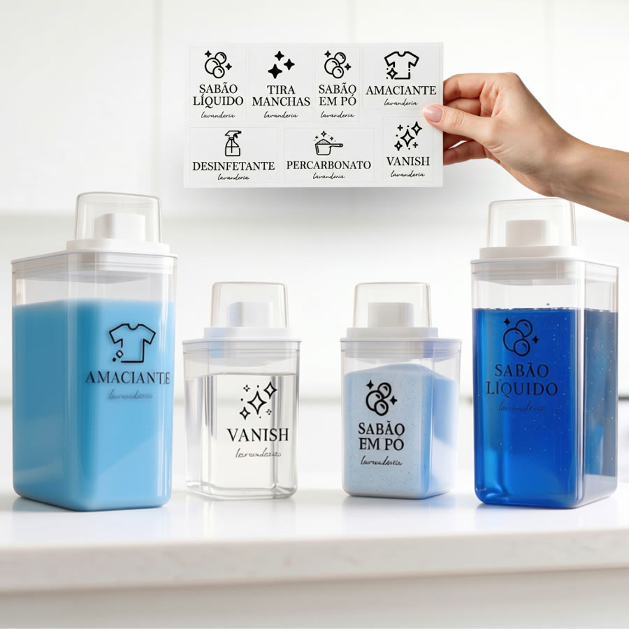
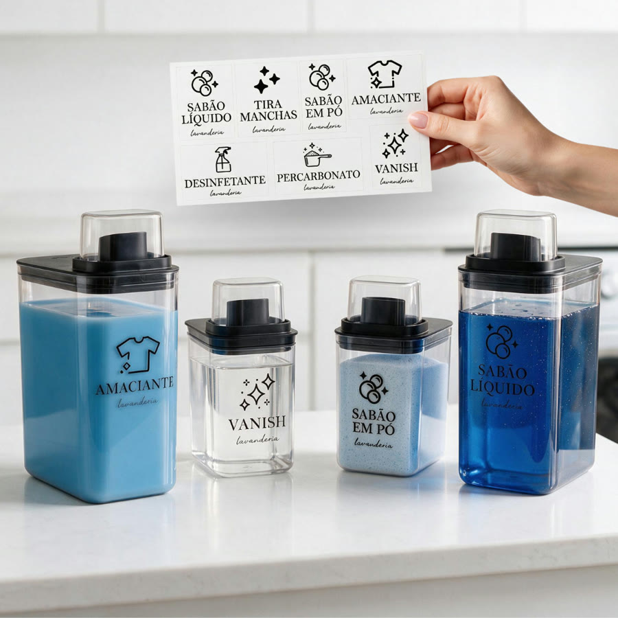

Achado nº 5
Dispensers de lavanderia 1,5 L e 2,3 L com etiquetas





O que diz a página oficial do produto
- Potes transparentes para sabão líquido, sabão em pó, amaciante, tira-manchas e desinfetante
- Vêm em dois tamanhos: 1,5 litro e 2,3 litros; a combinação do kit é escolhida no anúncio
- A tampa é medidora, para dosar o produto
- Segundo o anúncio, o que sobra na tampa escorre de volta para dentro do pote
- Segundo o anúncio, a vedação é hermética, contra vazamentos
- Acompanha adesivos para identificar o conteúdo de cada pote
- Feitos de poliestireno; o de 2,3 litros mede 26,7 cm de altura
- Na Shopee, tem nota 5 com mais de 3 mil avaliações e mais de 9 mil vendidos
Link de afiliado: se você comprar por ele, a Achadaria pode receber uma comissão, sem custo extra para você. Preço, estoque e entrega são da loja e podem mudar; confira lá antes de comprar.